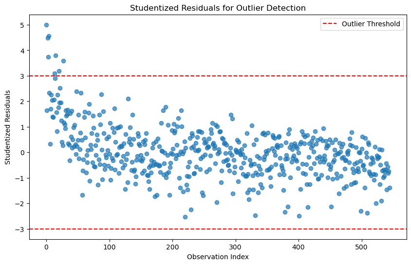
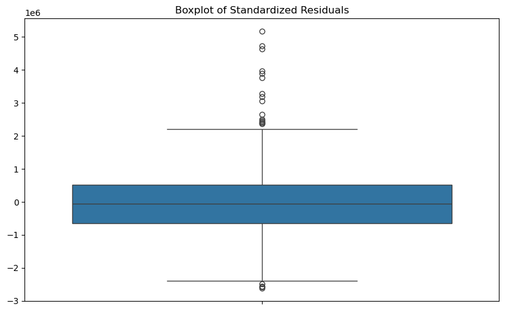
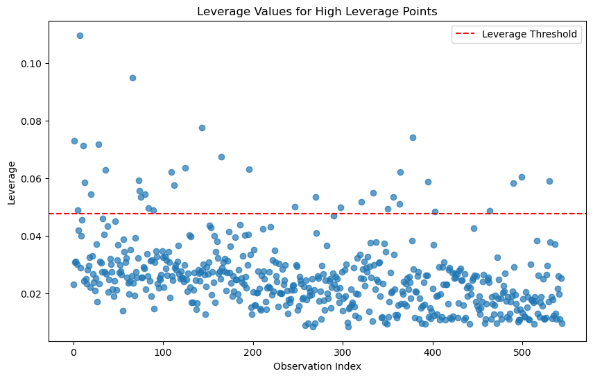
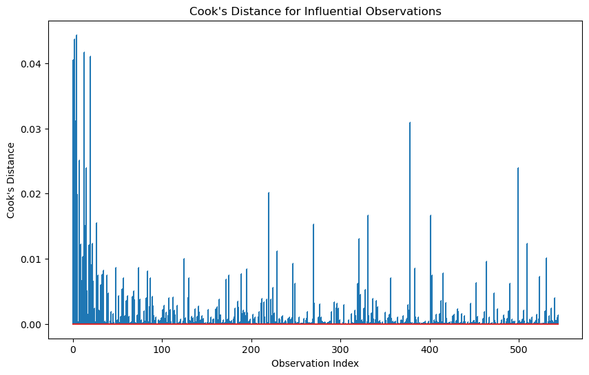
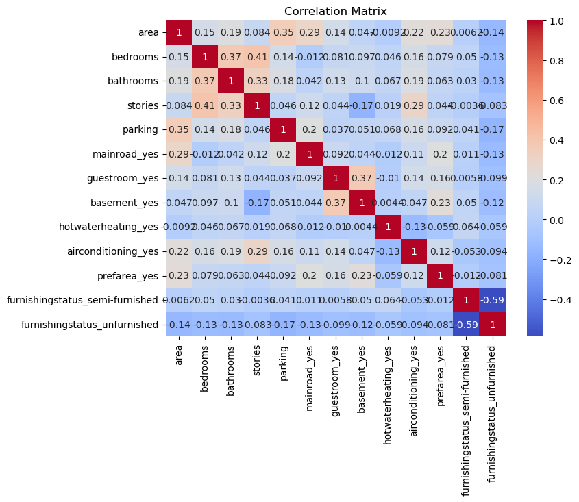
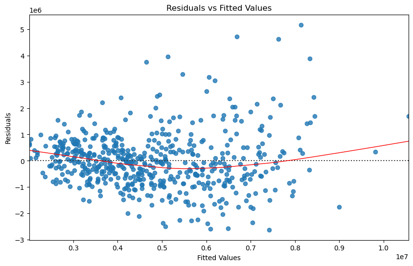
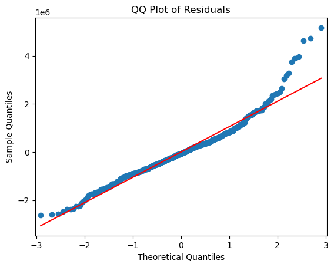
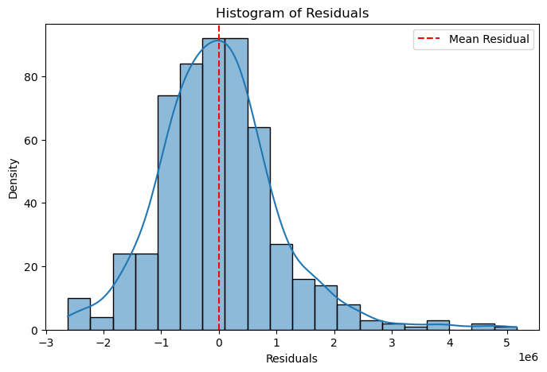

# Import necessary libraries
import numpy as np
import pandas as pd
import statsmodels.formula.api as smf
import statsmodels.api as sm
import seaborn as sns
import matplotlib.pyplot as plt
from statsmodels.stats.outliers_influence import variance_inflation_factor5 Beyond Fit (implementation): Identifying Outliers, High Leverage, Multicollinearity, and Residual Patterns
# Load the Boston Housing dataset (for demonstration purposes)
df = pd.read_csv('datasets/Housing.csv')
df.head()| price | area | bedrooms | bathrooms | stories | mainroad | guestroom | basement | hotwaterheating | airconditioning | parking | prefarea | furnishingstatus | |
|---|---|---|---|---|---|---|---|---|---|---|---|---|---|
| 0 | 13300000 | 7420 | 4 | 2 | 3 | yes | no | no | no | yes | 2 | yes | furnished |
| 1 | 12250000 | 8960 | 4 | 4 | 4 | yes | no | no | no | yes | 3 | no | furnished |
| 2 | 12250000 | 9960 | 3 | 2 | 2 | yes | no | yes | no | no | 2 | yes | semi-furnished |
| 3 | 12215000 | 7500 | 4 | 2 | 2 | yes | no | yes | no | yes | 3 | yes | furnished |
| 4 | 11410000 | 7420 | 4 | 1 | 2 | yes | yes | yes | no | yes | 2 | no | furnished |
# build a formular api model using price as the target, the rest of the variables as predictors
model = smf.ols('price ~ area + bedrooms + bathrooms + stories + mainroad + guestroom + basement + hotwaterheating + airconditioning + parking + prefarea + furnishingstatus', data=df)
model = model.fit()
print(model.summary()) OLS Regression Results
==============================================================================
Dep. Variable: price R-squared: 0.682
Model: OLS Adj. R-squared: 0.674
Method: Least Squares F-statistic: 87.52
Date: Wed, 05 Feb 2025 Prob (F-statistic): 9.07e-123
Time: 08:46:02 Log-Likelihood: -8331.5
No. Observations: 545 AIC: 1.669e+04
Df Residuals: 531 BIC: 1.675e+04
Df Model: 13
Covariance Type: nonrobust
======================================================================================================
coef std err t P>|t| [0.025 0.975]
------------------------------------------------------------------------------------------------------
Intercept 4.277e+04 2.64e+05 0.162 0.872 -4.76e+05 5.62e+05
mainroad[T.yes] 4.213e+05 1.42e+05 2.962 0.003 1.42e+05 7.01e+05
guestroom[T.yes] 3.005e+05 1.32e+05 2.282 0.023 4.18e+04 5.59e+05
basement[T.yes] 3.501e+05 1.1e+05 3.175 0.002 1.33e+05 5.67e+05
hotwaterheating[T.yes] 8.554e+05 2.23e+05 3.833 0.000 4.17e+05 1.29e+06
airconditioning[T.yes] 8.65e+05 1.08e+05 7.983 0.000 6.52e+05 1.08e+06
prefarea[T.yes] 6.515e+05 1.16e+05 5.632 0.000 4.24e+05 8.79e+05
furnishingstatus[T.semi-furnished] -4.634e+04 1.17e+05 -0.398 0.691 -2.75e+05 1.83e+05
furnishingstatus[T.unfurnished] -4.112e+05 1.26e+05 -3.258 0.001 -6.59e+05 -1.63e+05
area 244.1394 24.289 10.052 0.000 196.425 291.853
bedrooms 1.148e+05 7.26e+04 1.581 0.114 -2.78e+04 2.57e+05
bathrooms 9.877e+05 1.03e+05 9.555 0.000 7.85e+05 1.19e+06
stories 4.508e+05 6.42e+04 7.026 0.000 3.25e+05 5.77e+05
parking 2.771e+05 5.85e+04 4.735 0.000 1.62e+05 3.92e+05
==============================================================================
Omnibus: 97.909 Durbin-Watson: 1.209
Prob(Omnibus): 0.000 Jarque-Bera (JB): 258.281
Skew: 0.895 Prob(JB): 8.22e-57
Kurtosis: 5.859 Cond. No. 3.49e+04
==============================================================================
Notes:
[1] Standard Errors assume that the covariance matrix of the errors is correctly specified.
[2] The condition number is large, 3.49e+04. This might indicate that there are
strong multicollinearity or other numerical problems.# ------------------------------------------
# 1. Identifying Outliers (using studentized residuals)
# ------------------------------------------
# Outliers can be detected using studentized residuals
outliers_studentized = model.get_influence().resid_studentized_external
outlier_threshold = 3 # Common threshold for studentized residuals# Plot studentized residuals
plt.figure(figsize=(10, 6))
plt.scatter(range(len(outliers_studentized)), outliers_studentized, alpha=0.7)
plt.axhline(y=outlier_threshold, color='r', linestyle='--', label='Outlier Threshold')
plt.axhline(y=-outlier_threshold, color='r', linestyle='--')
plt.title('Studentized Residuals for Outlier Detection')
plt.xlabel('Observation Index')
plt.ylabel('Studentized Residuals')
plt.legend()
plt.show()
# Identify observations with high studentized residuals
outlier_indices_studentized = np.where(np.abs(outliers_studentized) > outlier_threshold)[0]
print(f"Outliers detected at indices: {outlier_indices_studentized}")Outliers detected at indices: [ 0 2 3 4 13 15 20 27]# ------------------------------------------
# 1. Identifying Outliers (using standardized residuals)
# ------------------------------------------
# Outliers can be detected using standardized residuals
outliers_standardized = model.get_influence().resid_studentized_internal
outlier_threshold = 3 # Common threshold for standardized residuals# Identify observations with high standardized residuals
outlier_indices_standardized = np.where(np.abs(outliers_standardized) > outlier_threshold)[0]
print(f"Outliers detected at indices: {outlier_indices_standardized}")Outliers detected at indices: [ 0 2 3 4 13 15 20 27]# Plot studentized residuals
plt.figure(figsize=(10, 6))
plt.scatter(range(len(outliers_standardized)), outliers_standardized, alpha=0.7)
plt.axhline(y=outlier_threshold, color='r', linestyle='--', label='Outlier Threshold')
plt.axhline(y=-outlier_threshold, color='r', linestyle='--')
plt.title('standardized Residuals for Outlier Detection')
plt.xlabel('Observation Index')
plt.ylabel('standardized Residuals')
plt.legend()
plt.show()# ------------------------------------------
# 1. Identifying Outliers (using boxplot)
# ------------------------------------------
# Outliers can be detected using boxplot of standardized residuals
plt.figure(figsize=(10, 6))
sns.boxplot(model.resid)
plt.title('Boxplot of Standardized Residuals');
# use 3 standard deviation rule to identify outliers
outlier_indices = np.where(np.abs(model.resid) > 3 * model.resid.std())[0]
print(f"Outliers detected at indices: {outlier_indices}")Outliers detected at indices: [ 0 2 3 4 13 15 20 27]# ------------------------------------------
# 2. Identifying High Leverage Points
# ------------------------------------------
# High leverage points can be detected using the hat matrix (leverage values)
leverage = model.get_influence().hat_matrix_diag
leverage_threshold = 2 * (df.shape[1] / df.shape[0]) # Common threshold for leverage5.0.0.1 Identifying High Leverage Points
A common threshold for identifying high leverage points in regression analysis is:
\(h_i > \frac{2p}{n}\)
where:
- \(h_i\) is the leverage value for the ( i )-th observation,
- \(p\) is the number of predictors (including the intercept), and
- \(n\) is the total number of observations.
# Plot leverage values
plt.figure(figsize=(10, 6))
plt.scatter(range(len(leverage)), leverage, alpha=0.7)
plt.axhline(y=leverage_threshold, color='r', linestyle='--', label='Leverage Threshold')
plt.title('Leverage Values for High Leverage Points')
plt.xlabel('Observation Index')
plt.ylabel('Leverage')
plt.legend()
plt.show()
# Identify observations with high leverage
high_leverage_indices = np.where(leverage > leverage_threshold)[0]
print(f"High leverage points detected at indices: {high_leverage_indices}")High leverage points detected at indices: [ 1 5 7 11 13 20 28 36 66 73 74 75 80 84 89 109 112 125
143 165 196 247 270 298 321 334 350 356 363 364 378 395 403 464 490 499
530]# ------------------------------------------
# 3. Cook's Distance for Influential Observations
# ------------------------------------------
# Cook's distance measures the influence of each observation on the model
cooks_distance = model.get_influence().cooks_distance[0]
# Plot Cook's distance
plt.figure(figsize=(10, 6))
plt.stem(range(len(cooks_distance)), cooks_distance, markerfmt=",")
plt.title("Cook's Distance for Influential Observations")
plt.xlabel('Observation Index')
plt.ylabel("Cook's Distance")
plt.show()
Cook’s distance is considered high if it is greater than 0.5 and extreme if it is greater than 1.
# Identify influential observations
influential_threshold = 4 / (df.shape[1] - 1 ) # Common threshold for Cook's distance
influential_indices = np.where(cooks_distance > influential_threshold)[0]
print(f"Influential observations detected at indices: {influential_indices}")Influential observations detected at indices: []# =======================================
# 4. Checking Multicollinearity (VIF)
# =======================================
# VIF calculation
from statsmodels.stats.outliers_influence import variance_inflation_factor
def calculate_vif(X):
vif_data = pd.DataFrame()
vif_data["Variable"] = X.columns
vif_data["VIF"] = [variance_inflation_factor(X.values, i) for i in range(X.shape[1])]
return vif_data
X = df[['area', 'bedrooms', 'bathrooms', 'stories', 'mainroad', 'guestroom', 'basement', 'hotwaterheating', 'airconditioning', 'parking', 'prefarea', 'furnishingstatus']]
# one-hot encoding for categorical variables
X = pd.get_dummies(X, drop_first=True, dtype=float)
vif_data = calculate_vif(X)
print("\nVariance Inflation Factors:")
print(vif_data.sort_values('VIF', ascending=False))
Variance Inflation Factors:
Variable VIF
1 bedrooms 16.652387
2 bathrooms 9.417643
0 area 8.276447
3 stories 7.880730
5 mainroad_yes 6.884806
11 furnishingstatus_semi-furnished 2.386831
7 basement_yes 2.019858
12 furnishingstatus_unfurnished 2.008632
4 parking 1.986400
9 airconditioning_yes 1.767753
10 prefarea_yes 1.494211
6 guestroom_yes 1.473234
8 hotwaterheating_yes 1.091568# Rule of thumb: VIF > 10 indicates significant multicollinearity
multicollinear_features = vif_data[vif_data['VIF'] > 10]['Variable']
print(f"Features with significant multicollinearity: {multicollinear_features.tolist()}")Features with significant multicollinearity: ['bedrooms']# =======================================
# 4. Checking Multicollinearity (Correlation Matrix)
# =======================================
# Correlation matrix
correlation_matrix = X.corr()
plt.figure(figsize=(8, 6))
sns.heatmap(correlation_matrix, annot=True, cmap='coolwarm')
plt.title('Correlation Matrix');
#output the correlation of other predictors with the bedrooms
X.corr()['bedrooms'].abs().sort_values(ascending=False)bedrooms 1.000000
stories 0.408564
bathrooms 0.373930
airconditioning_yes 0.160603
area 0.151858
parking 0.139270
furnishingstatus_unfurnished 0.126252
basement_yes 0.097312
guestroom_yes 0.080549
prefarea_yes 0.079023
furnishingstatus_semi-furnished 0.050040
hotwaterheating_yes 0.046049
mainroad_yes 0.012033
Name: bedrooms, dtype: float64# ------------------------------------------
# 5. Analyzing Residual Patterns
# ------------------------------------------
# Residuals vs Fitted Values Plot
fitted_values = model.fittedvalues
residuals = model.resid
plt.figure(figsize=(10, 6))
sns.residplot(x=fitted_values, y=residuals, lowess=True, line_kws={'color': 'red', 'lw': 1})
plt.title('Residuals vs Fitted Values')
plt.xlabel('Fitted Values')
plt.ylabel('Residuals');
# QQ Plot for Normality of Residuals
plt.figure(figsize=(10, 6))
sm.qqplot(residuals, line='s')
plt.title('QQ Plot of Residuals');
<Figure size 1000x600 with 0 Axes>
plt.figure(figsize=(8, 5))
sns.histplot(residuals, kde=True, bins=20)
plt.axvline(residuals.mean(), color='red', linestyle='--', label="Mean Residual")
plt.xlabel("Residuals")
plt.ylabel("Density")
plt.title("Histogram of Residuals")
plt.legend()
plt.show()